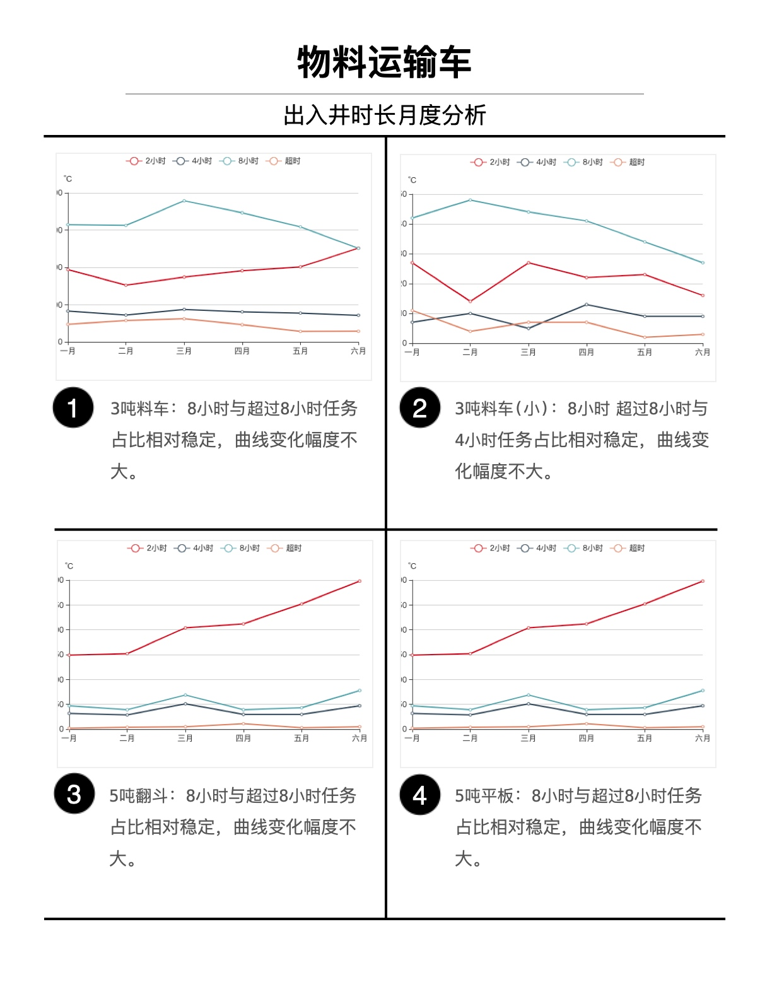
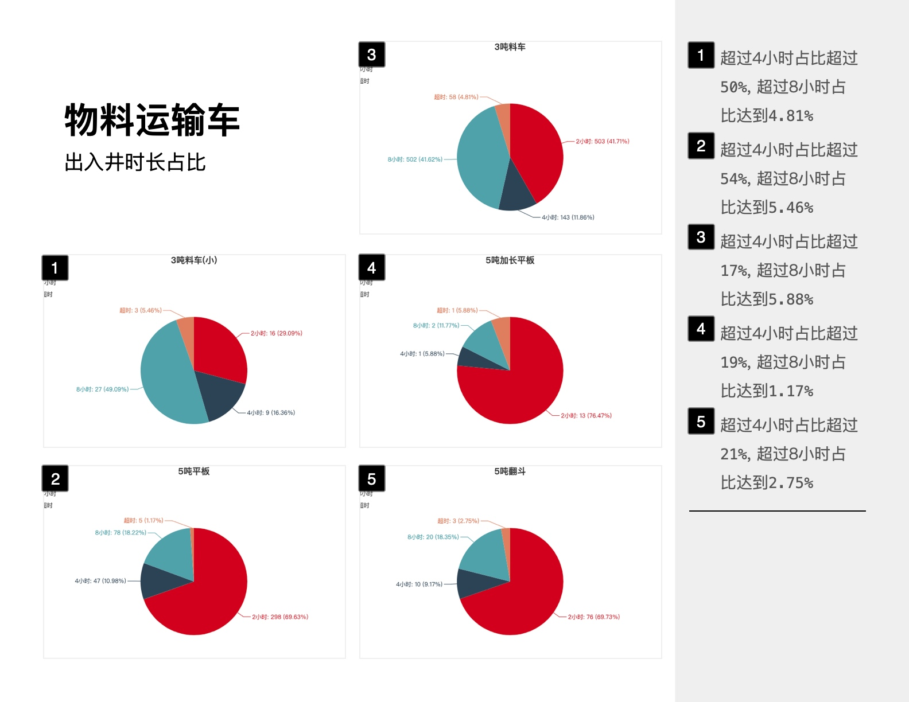
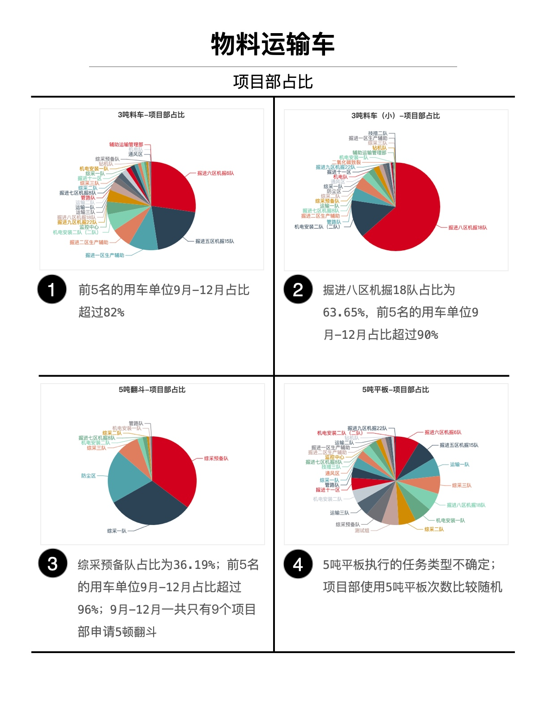

车辆出入井时长对比图
- 统计日期范围：2020年1月-2020年6月
- 对比车型：
3吨料车3吨料车(小)5吨加长平板5吨平板5吨翻斗 - 对比时长段：
0-2小时2-4小时4-8小时超过8小时 - 数据结论
各种车型大部分一次出入井时长可以控制在8小时内
各种车型均存在一次出入井时长超过8小时的情况
车辆出入井时长月度对比

3吨料车：8小时与超过8小时任务占比相对稳定，曲线变化幅度不大。3吨料车(小)：8小时超过8小时与4小时任务占比相对稳定，曲线变化幅度不大。5吨翻斗：8小时与超过8小时任务占比相对稳定，曲线变化幅度不大。5吨平板：8小时与超过8小时任务占比相对稳定，曲线变化幅度不大。
各种车型出入井时长占比

3吨料车：超过4小时占比超过50%, 超过8小时占比达到4.81%。3吨料车(小)：超过4小时占比超过54%, 超过8小时占比达到5.46%。5吨加长平板：超过4小时占比超过17%, 超过8小时占比达到5.88%。5吨平板：超过4小时占比超过19%, 超过8小时占比达到1.17%。5吨翻斗：超过4小时占比超过21%, 超过8小时占比达到2.75%。
项目部申请车型占比

3吨料车：前5名的用车单位9月-12月占比超过82%。3吨料车(小)：掘进八区机掘18队占比为63.65%，前5名的用车单位9月-12月占比超过90%。5吨翻斗：综采预备队占比为36.19%；前5名的用车单位9月-12月占比超过96%；9月-12月一共只有9个项目部申请5顿翻斗。5吨平板：5吨平板执行的任务类型不确定；项目部使用5吨平板次数比较随机。